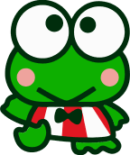
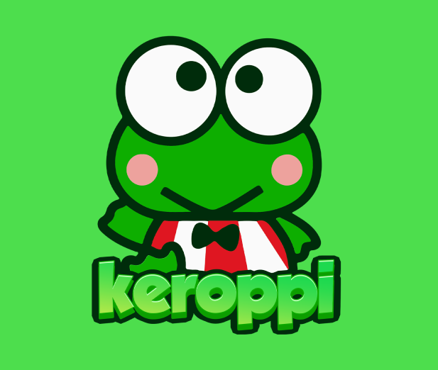
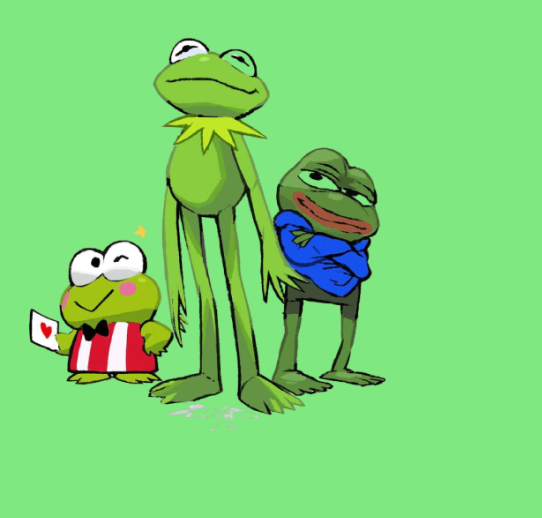
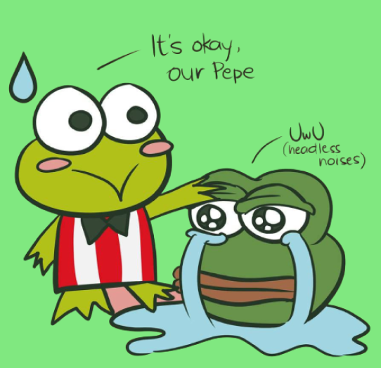

discover our tokenomics
Meet Keroppi, the lovable character from the Sanrio universe who inspire us to explore, learn, and enjoy the beauty of nature.

0% tax
ownership renounced

about keroppi
Keroppi's sense of adventure led him on many exciting journeys, including a search for a rare flower deep in the forest. Along the way, he made new friends and learned valuable lessons about himself and the world around him. Keroppi's positive attitude and love of nature continue to inspire people of all ages, making him a beloved character in the Sanrio universe.
buy now

